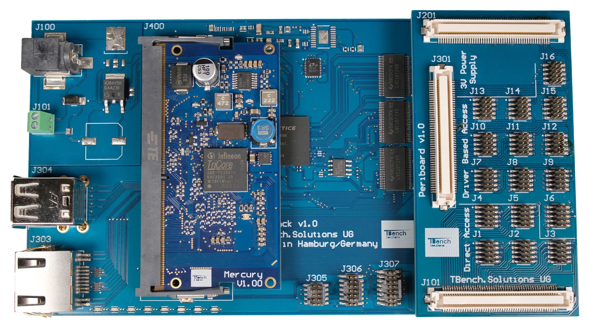

Custom system development
Electrical, mechanical and system engineering for application-specific technical challenges.
Explore engineering services ↗TBench connects electrical engineering, embedded software and system development—from the first technical question to a working solution.

UNIJACK / MODULAR EMBEDDED HARDWAREFEATURED PLATFORM
A modular development platform with ERAU routing, designed to link controller modules and peripheral boards.
BUILT AROUND DIFFERENT NEEDS
Whether you're exploring a principle, commissioning a system or working on your own design, start where you belong.
WHAT TBENCH DOES
Support across disciplines, with a focus on making complex embedded systems practical to develop and integrate.
Electrical, mechanical and system engineering for application-specific technical challenges.
Explore engineering services ↗Technical support spanning embedded platforms, implementation and hardware–software integration.
Explore capabilities ↗Gold Certified Preferred Design House for Infineon microcontroller technologies.
Official services ↗UniJack, Mercury- and Venus-Modules built for configurable embedded development as well as comprehensive testing possibilities.
Explore UniJack ↗PRODUCTS & PLATFORMS
Explore the Venus-MXO4 and Venus-MXO5 modules. Technical specifications and availability should be confirmed directly with TBench.
THE NEXT CONVERSATION
Tell TBench what you're building or researching. Start a conversation with the people behind the engineering.
Get in touch